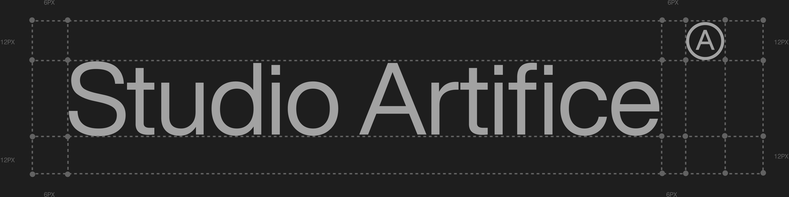
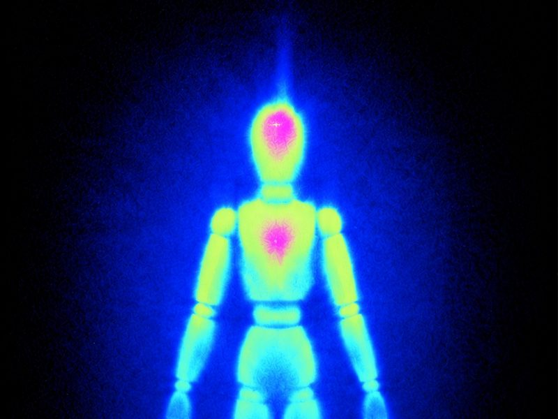

Studio Artifice is a strategic visual studio in New York, designing durable artifacts for AI companies, cultural institutions, and consumer brands.
The practice develops worldsites that connect brand identity, websites, and live experiences across strategy, identity, applications, and production. Engagements can begin at different phases depending on the work already established, with production contingent on an approved creative direction and scope.
Studio Artifice is led by Renaise, a visual prototyper and producer with eight years on worldsites, the identity work that runs from strategy through production. She works from New York, across culture and venture, with clients in consumer media, creative tools, and deep tech. She also leads creative direction at Artifice, a cultural nonprofit.
Name
Studio Artifice
Legal name
Studio Artifice LLC
Location
New York
Led by
Renaise
Clients
AI companies, cultural institutions, and consumer brands
Phases
StrategyIdentityApplicationsProduction
Founded
TBD · Artifice to supply
Web
TBD · Artifice to supply
Contact
TBD · Artifice to supply
Boilerplate
Short
Studio Artifice is a strategic visual studio in New York, designing durable artifacts for AI companies, cultural institutions, and consumer brands.
Standard
Studio Artifice is a strategic visual studio in New York, designing durable artifacts for AI companies, cultural institutions, and consumer brands. The practice develops worldsites that connect brand identity, websites, and live experiences across strategy, identity, applications, and production. Engagements can begin at different phases depending on the work already established, with production contingent on an approved creative direction and scope.
Extended
Studio Artifice is a strategic visual studio in New York, designing durable artifacts for AI companies, cultural institutions, and consumer brands. The practice develops worldsites that connect brand identity, websites, and live experiences across strategy, identity, applications, and production. Engagements can begin at different phases depending on the work already established, with production contingent on an approved creative direction and scope.
Studio Artifice is led by Renaise, a visual prototyper and producer with eight years on worldsites, the identity work that runs from strategy through production. She works from New York, across culture and venture, with clients in consumer media, creative tools, and deep tech. She also leads creative direction at Artifice, a cultural nonprofit.
02
Thesis
A brand is one continuous artifact. Identity, website, and live experience are not separate deliverables; they are one worldsite, built to hold together from URL to IRL. The studio designs that artifact to be durable: systems that survive handoff, scale, and time, rather than campaigns that expire. Work moves through four phases, strategy, identity, applications, production, and an engagement can enter at any phase the work has earned.
Evidence over claims: process shown, materials named, decisions logged. The visual register follows from that. It borrows the language of inspection and print production, registration marks, test strips, measured grids, imaging, because those are the tools of work being verified, not advertised.
In research R&D
The R&D takes that register literally. The identity is monochrome and carries four phase colors, so it asks what those colors are for. Three instrument traditions give the same answer: in thermal imaging, thin-film interference and color bars, color is a reading on a declared scale, never decoration.
Color appears only with its reference, and the row of four squares is that reference.
Hue never builds hierarchy. It only reports a condition. The studies are under 12 The reading and 13 Studies.
04
Primitive logic
The graphic language is built from primitives: the square, the circle, the plus, and the 1px rule. Each one encodes something real.
Primitives
The square
The square is the printed patch, a block of material.
The circle
The circle is the registration ring, the lens of inspection.
The plus
The plus is the register, the point where layers align.
The 1px rule
The rule divides.
Compositions
Everything else is a composition of those. The device is square beside a circle with the plus knocked out. The monogram is the circle holding the letter A. The register marks on covers are bars and dots, square and circle at small scale. The index frieze is the device repeated. A new graphic element must either be one of these primitives or name which ones it composes; anything that cannot be decorated and gets cut.
The ramp R&D
Sorted by how much of a cell each one inks, the primitives become a tone ramp, so an image or a field can be drawn in the brand's own shapes. The chosen ramp, Brand 5, uses the circle with the plus knocked out (as in the device, never a plain filled circle) and scales the plus to 72% so it sits halfway to the monogram.
05
The mark
The lockup is three parts: the device, the wordmark, and the Ⓐ monogram.
Marks
Lockup device, wordmark, and the Ⓐ monogramDevice scales down alone for small sizesWordmarkMonogram alone marks pages
Clear space

Clear space is 2x on all sides of the wordmark and 1x to the monogram, fixed in the construction grid.
Minimum sizes
Minimum sizes TBD · Artifice to supply
Incorrect use
✕Recolored
✕Effects
✕Low contrast
High contrast only, approved files only, no recoloring or effects.
On the Figma masters R&D
Element
Master
Notes
Device
252.79 × 124.27
Used from 14 px to 949 px.
Wordmark
1662.39 × 217.19
Outlined art. No live font matches it, so it is never re-set in type.
Ⓐ monogram
135.65 square
A component instance on the cover.
Lockup
1856 × 269.6
The masters combine wordmark and Ⓐ only; the three-part lockup above has no master yet.
Open decisions R&D
Decision
Options
Lockup master
Draw the three-part master (device, wordmark, Ⓐ), or keep the two-part one as drawn.
Minimum sizes
Not yet set for the device or the lockup (see above).
The system operates in a strict monochrome register.
Surfaces
Ink
the ground
Paper
the text on it
Linen
the light sections
Panel
the raised surface
Line
the hairline
Surfaces are monochrome. Hierarchy on a surface comes strictly from value and scale, light against dark, not from hue.
Grayscale
Grayscale tints TBD · Artifice to supply
Phase colors R&D
Four colors, each locked to one phase, in the Figma order: lime is Strategy, magenta is Identity, cyan is Applications, blue is Production. Renaise decided on Oct 20 that the pairs and the order are final. The colors never fill a surface: the surfaces above stay monochrome, and a phase color appears only as a reading on its scale.
Strategy
L* 94 · hue 72°
Identity
L* 59 · hue 312°
Applications
L* 85 · hue 181°
Production
L* 33 · hue 238°
Measured, they span both media: three sit near print's process inks, one near the screen's blue primary. Mixed as light at 41 : 23 : 10 : 26 they balance to a neutral grey near L* 76, so the monochrome system is their balanced sum.
Pairs
Figma order · finalStrategy, Identity, Applications, Production. A color always names its phase, and the row always runs in this order. The film order proposed in the R&D is retired.
Proposed usage
Rule
Why
A phase color always names its phase.
The pairs are fixed, so a color is read as its phase wherever it appears.
A phase color never appears without its scale.
Thermal color only means something next to its scale bar.
Exact hexes only in bands, isotherms and readings.
Photography is the picture; the hexes are the measurement.
Iridescence never fills a surface.
Film color appears only where two layers meet, and its hue reports the gap.
The row of four is the check strip.
Every other appearance of color is checked against it.
Greys on the Figma masters
Found on the masters, not adopted. The grayscale above stays TBD until Artifice supplies it.
Ink · L* 4
Panel
Line
The near-blacks need a check: a badly set screen merges ink, panel and line. The black level check study is built from exactly these.
08
Typography
One sans sets everything: Helvetica Now Display.
Typefaces
Aa
Helvetica Now Display
Hierarchy comes from scale and value, never weight.
Aa
Monospace
No monospace anywhere, with no exceptions (Renaise, Oct 20).
Scale
DisplayLight, around 300 · size TBD
BodySize TBD
Caption / label11px · uppercase
Do
Display sets light, around 300, at tight tracking.
Labels are the metadata register: 11px, uppercase, tracked, muted, and rare.
Rules and borders are 1px. Radius is 2px.
Don't
✕Nothing exceeds 500.
✕No monospace anywhere, not even for code or figures.
Steps on the Figma masters R&D
Step
Size
Case
Tracking
Where
Body
24 px
Sentence
+12%
Index and slide body text
Label
18 px
Uppercase
—
Phase bar, taglines, chapter numbers, slide headers
Caption
18 px
Sentence
—
Index chapter labels
Settings lines that read like instruments (ε 0.95 · SPAN 18–36 °C) are set as labels with tabular figures, never in a monospace face. Rive files and every study use Helvetica Now Display Regular, with Light for display sizes.
09
Motion
One easing curve, cubic-bezier(.22,1,.36,1), around 0.2s.
TBD · Artifice to supply
Motion loop · built from the device, wordmark and Ⓐ · delivered Oct 28
Easing
cubic-bezier(.22,1,.36,1)
Duration
around 0.2s
Stings in development R&D
Sting
What happens
Status
Registration Sting
Crop marks become the scope; four plates close into register; the mark resolves to the screw. 6.4 s, built in Rive as editable keyframes.
Chosen, in polish
Warm-up
The thermal mannequin's head and heart ignite, heat spreads, an isotherm sweeps, and the cells gather into the Ⓐ monogram. About 7 s.
Study
Bars and tone
A leader of the four bars with a slate before every film or reel cut; the same file is the site's loading and offline state.
Study
Every Rive file is built from a copy of the brand library: its tokens, primitives, marks and one Motion ease.
10
Imagery
The brand figure is an artist's mannequin: the still-life subject, the proxy a draftsman observes when learning to see. It stands for observation itself.
Figure and photography

Thermal · the figure as hero
TBD · Artifice to supply
X-ray grayscale · applications
TBD · Artifice to supply
Photography · dark, filmic, available light
Imaging it, thermal when the figure is the hero, X-ray grayscale on applications, is observational drawing carried into the studio's own instruments: the same subject, looked at harder. On applications the figure stays strictly grayscale. Photography elsewhere is dark, filmic, and shot in available light; no stock, no heavy grades.
Reading the thermal figure R&D
The thermal image ranks its colors by heat: blue, cyan, lime, magenta. That is not the phase order, so its colors stay part of the picture and are never read as phases. On the brand vectorscope its colors sit 0% on target, because the image is softened. Proposed: the photograph stays the picture, and exact phase hexes appear only in bands and isotherms drawn from it.
11
Voice
Write like an editor, not a copywriter: assume a peer, state rather than sell.
Do
Flat declarative sentences a reader could check or dispute.
Observation over declaration, material before concept.
Warmth comes from noticing, not adjectives.
Don't
✕No exclamation points.
✕No aphoristic punchlines.
✕No reversals built for quoting.
Before and after
Before / after examples TBD · Artifice to supply
12R&D
The reading
The idea every study tests. The field stays monochrome. Color appears only where a value crosses a declared threshold, and the scale it is read against is always on screen.
Heat on the field
The primitives as a field, with the pointer as a heat source. Brightness drifts on noise and picks a shape from the ramp; heat lifts cells up the ramp and cools on a known curve. Only cells past the isotherm take a phase color, banded in the Figma order: Production at the isotherm, Strategy at the hottest.
Four plates on one mark; in register they close to black
13R&D
Studies
Every live study, by label. Each opens full screen and runs in the Figma order. Some still offer the retired film order as a toggle. The R&D index holds the research notes in full.
14R&D
Tokens
Every value on this page, by name. Select a card to copy its value. Surfaces follow the base above; the rest are proposals from the R&D.
15R&D
References
What the system is measured against: instruments that use color as a reading. Each one informed a study above. Images are by outside authors under the licences shown; each comes with readings written for a general reader.
The image carries its own scale bar, so every color is a temperature you can read off. The insulated house reads cold; the old building behind it leaks heat. That is the brand's idea in one picture: color reports a condition against a declared scale.
Open-access reviewInfrared Thermography for Temperature Measurement and Non-Destructive Testing. Usamentiaga, Venegas, Guerediaga, Vega, Molleda and Bulnes. Sensors 14(7), 12305–12348, 2014. CC BY 3.0.Opens with a plain introduction to how a camera turns infrared into a temperature reading, then shows it at work on buildings, machines and people.
Open-access paperThe misuse of colour in science communication. Crameri, Shephard and Heron. Nature Communications 11, 5444, 2020. CC BY 4.0.Why rainbow scales mislead and how an even scale keeps a reading honest. The clearest argument for a declared, readable scale.
Every color here is a thickness. The film is a few hundred nanometres deep, and its hue changes wherever the gap between its two surfaces changes. The dark spots are where it is thinnest, just before it breaks.
Peer-reviewed, for general readersThe “Recipe” for the Perfect Color. Frontiers for Young Minds, 2024. doi:10.3389/frym.2024.1432589.Written by scientists for young readers and reviewed by them. Explains structural color, soap bubbles included, without equations.
Free paperIridescence: views from many angles. Meadows, Butler, Morehouse, Taylor, Toomey, McGraw and Rutowski. Journal of the Royal Society Interface 6, S107–S113, 2009.A short overview that opens a special issue on iridescence, from the physics of thin films to how animals use it.
A signal of known values sent ahead of the picture, so anyone downstream can check what the chain did to it. The strip along the bottom tests the near-blacks the same way the brand's black level check does.
Library articleColor Bars & Test Patterns. Alex Marsh. Duke University Libraries, Bitstreams, 2016.A digitization team explains what “bars and tone” at the head of a tape is for, and where test patterns came from.
Standard · paidSMPTE EG 1-1990, Alignment Color Bar Test Signal for Television Picture Monitors. Society of Motion Picture and Television Engineers.The source document for the pattern above. Technical and behind a paywall; listed so the card can cite the standard by name.
A registration target and the color control patches, photographed on a real printed sheet. Every plate prints the same target; when the plates land in register they stack into one mark, and when they drift the target splits into colored ghosts.
Free museum referenceThe Atlas of Analytical Signatures of Photographic Processes: Halftone. Dusan C. Stulik and Art Kaplan. Getty Conservation Institute, 2013.The Getty's illustrated guide to the halftone process: how a photograph becomes printable dots, with history and magnified examples.
Museum exhibitionThe End of Chromolithography. Matthew H. Edney. A Pageant of Spectacles, Osher Map Library, University of Southern Maine, 2023–24.How four-color process printing replaced hand-separated lithography after 1900, and why halftone screens made precise registration possible.
The same color bars as the card above, read on the instrument. Angle is hue, distance from the centre is saturation, and each bar should land in its box. Grey sits at the centre, which is where the brand's monochrome lives.
Free paperColor Gamut Transform Pairs. Alvy Ray Smith. SIGGRAPH 78 Proceedings, 12–19, 1978. Author's copy.The paper that introduced HSV: describing color by hue, saturation and value instead of red, green and blue. It is the same idea the vectorscope draws as angle and radius.
Library articleColor Bars & Test Patterns. Duke University Libraries, 2016.Shared with the color bars card: why the bars exist is half of why the scope exists.